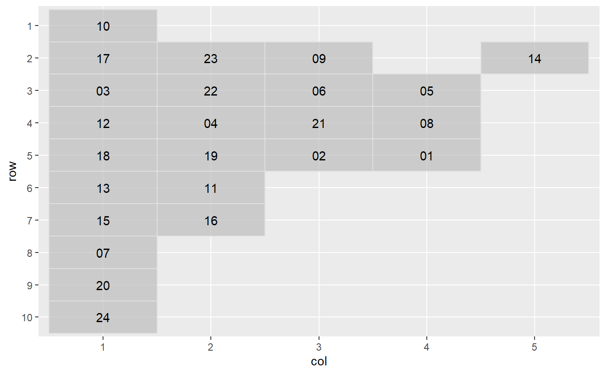
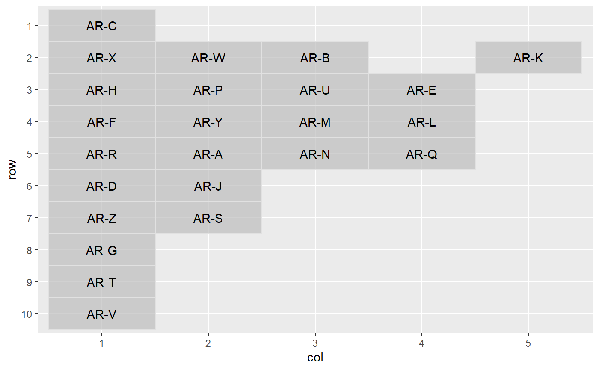
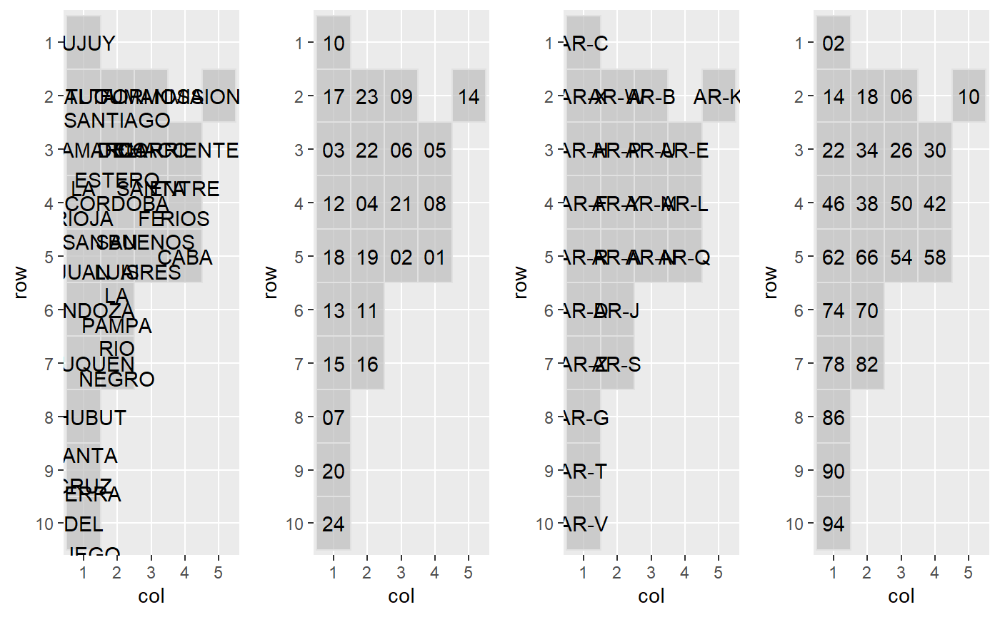

library(geofaceteAR) #> Loading required package: geofacet #> Registered S3 method overwritten by 'geofacet': #> method from #> +.gg ggplot2 library(patchwork)
argentina_indra <- get_grid("ARGENTINA") %>% recode_district(type = "indra") grid_preview(argentina_indra) -> a #> Note: You provided a user-specified grid. If this is a #> generally-useful grid, please consider submitting it to become a #> part of the geofacet package. You can do this easily by calling: #> grid_submit(__grid_df_name__)

argentina_iso <- get_grid("ARGENTINA") %>% recode_district(type = "iso") grid_preview(argentina_iso) -> b #> Note: You provided a user-specified grid. If this is a #> generally-useful grid, please consider submitting it to become a #> part of the geofacet package. You can do this easily by calling: #> grid_submit(__grid_df_name__)

argentina_indec <- get_grid("ARGENTINA") %>% recode_district(type = "indec") grid_preview(argentina_indec) -> c #> Note: You provided a user-specified grid. If this is a #> generally-useful grid, please consider submitting it to become a #> part of the geofacet package. You can do this easily by calling: #> grid_submit(__grid_df_name__)
argentina_indec <- get_grid("ARGENTINA") %>% recode_district(type = "indec") %>% dplyr::mutate(name = stringr::str_replace_all(name, " ", "\n")) grid_preview(argentina_indec, label = "name") -> names #> Note: You provided a user-specified grid. If this is a #> generally-useful grid, please consider submitting it to become a #> part of the geofacet package. You can do this easily by calling: #> grid_submit(__grid_df_name__)
names + a + b+ c + plot_layout(ncol = 4)
